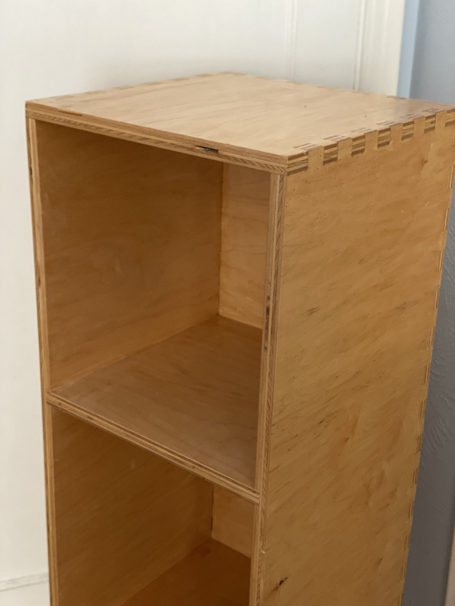

This page contains documentation of various projects I am working on or have completed, ranging from engineering, design, woodworking, and music technology.
I am a participant in UCLA IEEE's Micromouse project, in which I remotely collaborate with fellow UCLA student Jason Wu to create a small autonomous maze-solving robot. For our "mouse," we are currently using an STM32 microcontroller and circuits on a breadboard. We programmed in C using STM32CubeIDE to implement PID control and IR sensing, and we were able to successfully navigate through a track.
We designed breakout PCBs for IR sensing and motor control using Autodesk Eagle, had them manufactured, and assembled them using a soldering iron.
Since Micromouse is a year-long project, we have many goals that we are still working towards. Recently, we have been working on developing our maze solving algorithm, improving our continuous turning (without stopping), and implementing sensor fusion with IR and gyroscope data.
Shown below are the two breakout boards we designed for this project. I will update this page with more pictures and a video of our micromouse soon!
This project is a device to identify written characters/symbols based on pen stroke motions. When the user writes a character, acceleration and angular velocity data is collected, and the motion is classified using a neural network. The system can recognize six simple distinct characters resembling capital "L" shapes and lines in certain directions. A potential application of this concept would be a stylus that does not require a specific writing surface and can be trained for the writing styles of different individuals. This project was my final project for UCLA's Engineering 96C class (Introduction to Engineering Design: Internet of Things).
This project is an internet connected checklist to improve organization and focus in a remote learning environment. It was designed and prototyped using an ESP32 microcontroller and an electronic circuit on a breadboard. An OLED display shows the list of tasks and a 7 segment display shows the number of tasks yet to be completed. An LED and piezo buzzer are used to beep when the user makes selections. An IR emitter/reciever pair are used to monitor how long the user has been in their seat and remind them to take a break. This project was designed at IDEAHacks 2021: Home Applications, a hardware hackathon hosted by UCLA IEEE.
Full Project DescriptionThis project is a 3D model for a recorder (instrument) created in Autodesk Fusion 360. It is based on pre-existing technical drawings for a recorder. I am currently in the process of getting this project 3D printed.
This project is a work in progress that has been indefinitely postponed due to COVID-19/lack of access to tools to complete it. All of the necessary wood has been gathered and most of the individual pieces have been cut to size, but the table needs to be assembled, sanded, and finished. Shown below is a CAD drawing of it that I created in SketchUp.
To create these two bowls, I used both traditional and CNC woodworking techniques. Before hand turning, the bowls were first assembled from concentric plywood rings cut using the CNC router (a test run of this process is depicted in the second photo). This method is less wasteful of wood compared to usual bowl turning, where the entire inside of the bowl needs to be hollowed out.
This project is an effects pedal that I created at a summer workshop at Stanford’s CCRMA called Embedded DSP with Faust. It uses a Teensy microcontroller with an audio shield. The Teensy code was written in the Arduino language, and the signal processing algorithm was written in Faust. I made the box for this project using a laser cutter. Different programs can be loaded onto the Teensy using the USB to create different types of sounds. With the current program I am running, the pedal includes a flanger, low pass filter, and echo.
This project is a wind MIDI controller with buttons that change pitch similar to valves on a trumpet. The project features a wind (breath) sensor to control volume and a soft membrane potentiometer slide to shift pitch either continuously or discretely. I completed this project at the Designing Physical Interactions for Music workshop at Stanford University's Center for Computer Research in Music and Acoustics.
I designed this shelf in the CAD program Vectric Aspire and cut out the pieces using the CNC router. The shelf is made of plywood, and the pieces fit together using box joints, making this project very sturdy.
This project was designed as a way to test my high school's new CNC router, and is my first project using this tool. I designed this project using the CAD program Vectric Aspire. The board is made of maple and mahogany.
Pictured are several bowls I turned on the lathe. The method for creating the plywood bowls is described in further detail here.
Pictured are an end-grain cutting board, simple cutting board, and rolling pin.
The tongue drum is a percussion instrument in which beams vibrate at certain frequencies to create tonal sounds. To design this instrument, I used the equation for the natural frequency of a cantilever beam to calculate the required ratios between the lengths of the beams to produce notes from the pentatonic scale. The drum features a maple top to produce the tones, hickory sides, and a removable sliding cherry bottom to store mallets and make minor tuning adjustments.
Pens were my first lathe project. I made around 15 pens in my first year of woodshop class, many of which I gave as gifts to my family and friends. Six of them are shown below.